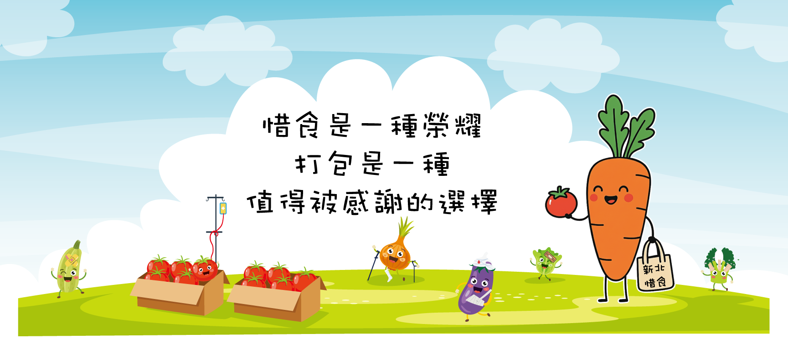

惜食
惜食
惜食
惜食

Why Zero Waste
「浪費食物」是一種文明病，在食材方面，每天都有大量賣相較差， 或即將過期但仍可食用之食材被丟棄，若能充分利用這些食材做成便當， 提供給需要幫助的老人、弱勢族群，則這不僅是一項社會愛心關懷活動， 更是一項珍惜資源、保護地球的環保行動！
我們做了這些事全球每年有超過 13 億噸食物被浪費，相當於全球糧食產量的三分之一。食物腐爛產生的甲烷，是導致全球暖化的重要溫室氣體之一。
當城市裡的人們每天丟棄大量剩食，全球仍有數億人面臨飢餓。惜食的核心理念，是讓食物流向真正需要它的人。
生產食物需要耗費大量的水、土地與能源。每丟掉一個便當，背後浪費的不只是食物，而是整條生產鏈的心血與資源。
Our Impact
Kitchen
募集食材、餐盒製作的數量皆持續成長， 惜食行動計畫成員依然持續思考：要怎麼做，才能做得更好、更長久？ 在這樣的期許之下，為了將惜食的意義和成效繼續擴散，惜食廚房應運而生。
向超市、菜市場、餐廳募集即將過期但仍安全可食的食材，減少食物在源頭就被丟棄。
由受過食品安全訓練的志工進行食材處理與烹調，每週定期製作新鮮便當與餐點。
將完成的餐點送達獨居老人、低收入戶、街友等需要幫助的族群，讓愛心直達最後一哩路。